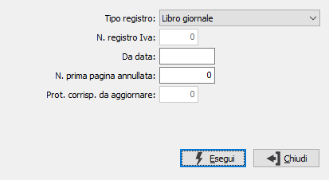
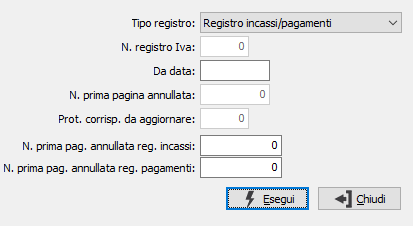

Ripristino registri bollati
Si tratta di un programma di servizio relativo al modulo Contabilità base che effettua l'annullamento dell'indicatore di stampa definitiva del libro giornale e dei vari registri IVA, effettua l'annullamento della liquidazione IVA e della ventilazione corrispettivi e degli altri registri eventualmente presente in base alle opzioni attivate; inoltre specificando il numero della prima pagina annullata consente di aggiornare sui protocolli anche correttamente il numero di pagina per la stampa successiva (questa prestazione è attiva se attiva la numerazione delle pagine bollate).
Per il registro dei corrispettivi è previsto di inserire il numero del protocollo da aggiornare, perchè se il registro viene stampato con il raggruppamento il dato non può essere calcolato in automatico.

Se in configurazione contabilità speciali l'opzione "Gestione semplificata per cassa" è impostata su Analitica la procedura consente di annullare la stampa del registro incassi/pagamenti.
